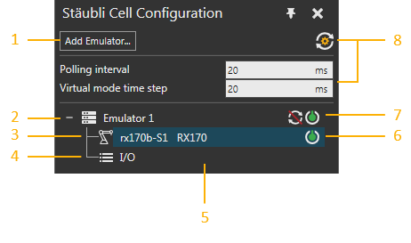
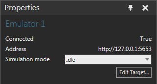
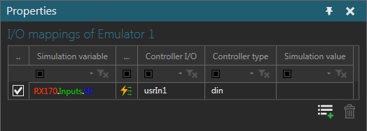
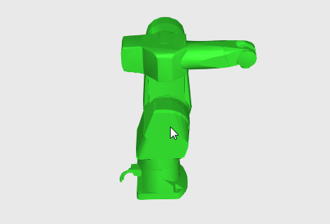
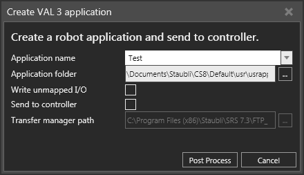
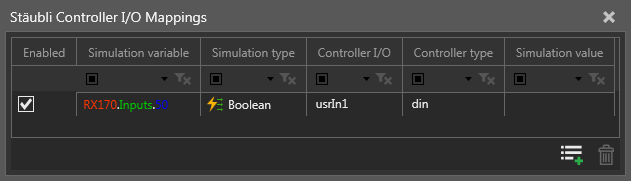
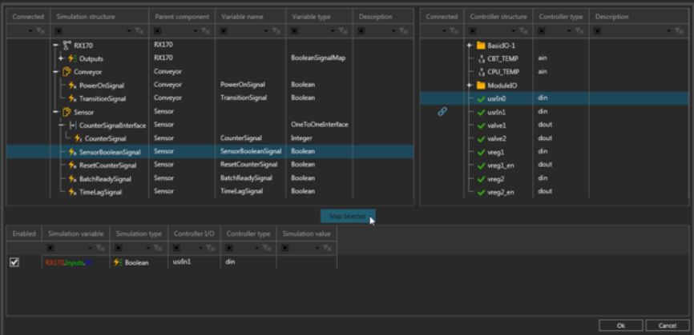

Contents ShowHide
The Stäubli Cell Configuration panel is the main panel for the Stäubli add-on.

| 1. | Add Emulator |
| 2. | Emulator Connection |
| 3. | Robot Mapping |
| 4. | I/O Mapping |
| 5. | Cell Configuration Tree |
| 6. | Turn On/Off Robot Mapping |
| 7. | Simulation Mode and Connect/Disconnect Emulator |
| 8. | Synchronization Timing Settings |
The Add Emulator button displays the Edit Emulator Target task pane, which allows you to test and add a new emulator connection to the Cell Configuration tree.
Note: You cannot add a new connection if the host name/address and port number match an existing emulator connection.
The Synchronization Timing Settings button displays a list of global settings for all connected emulators. They control how smooth robot movements can be captured and reacted to in both the simulation and VAL 3 robot program running on a connected emulator. This also includes how high the frequency is for I/O value changes.
A default of 20ms is used for both Polling interval and Virtual mode time step settings. These settings are not saved with a layout rather your application user settings.
The Cell Configuration tree shows emulator connections as well as robot and I/O mappings.
An emulator connection is always indicated by a unique name, its simulation mode, and is listed with a button that controls the state of the emulator connection. If simulation mode is not idle and the simulation is reset, you can connect/disconnect an emulator to turn on/off synchronization without having to change the simulation mode.
When you right-click an emulator connection, you have the following options.
| Name | Description |
| Change Target | Opens the Edit Emulator Target task pane, thereby allowing you to edit the network address of the emulator. |
| Connect | Connects the Stäubli add-on to the emulator. |
| Edit I/O Mappings | Opens the I/O Mappings Editor, thereby allowing you to map simulation variables with the physical I/O of controller. |
| Disconnect | Disconnects the Stäubli add-on from the emulator. |
| Remove | Deletes the emulator from the Stäubli add-on. |
| Show I/O Mappings | Shows the Stäubli Controller I/O Mappings panel. |
A connected emulator is associated with at least one robot configured in the Stäubli controller, which can be connected/mapped to a robot in the 3D world. A robot mapping indicates the name of robot in Stäubli controller, the name of its mapped robot in 3D world, and is listed with a button that controls the state of the connection between the robots.
When you right-click a robot mapping, you have the following options.
| Name | Description |
| Change Connected Robot | Opens the Change Connected Robot task pane, thereby allowing you to map a robot in Stäubli controller to robot in 3D world. |
| Post Process Program | Opens the Create VAL 3 application task pane, thereby allowing you to create a VAL 3 application. |
A connected emulator has its own set of inputs and outputs, which are I/O mappings for simulation variables and the physical I/O of a Stäubli controller.
When you right-click an I/O mapping, you have the following options.
| Name | Description |
| Edit I/O Mappings | Opens the I/O Mappings Editor, thereby allowing you to map simulation variables with the physical I/O of controller. |
| Show I/O Mappings | Shows the Stäubli Controller I/O Mappings panel. |
The Properties panel allows you to view and edit the attributes of a selected item in the Stäubli Cell Configuration panel.

| Name | Description |
| Connected | Indicates the state of the connection. |
| Address | Indicates the network address of the emulator. |
| Simulation mode | Defines the mode of interaction between Stäubli add-on and the
connected controller during a simulation.
Idle Virtual Polling Jogging Tip: In Jogging mode, you can jog a robot without having to run a simulation. Remember to disable robot arm power in Stäubli controller before entering Jogging mode. |
| Edit Target | Opens the Edit Emulator Target task pane, thereby allowing you to edit the network address of the emulator. |
If the robot in Stäubli controller is not mapped to a robot in 3D world, a Map to simulation robot button will be displayed in the Properties panel. This button opens the Change Connected Robot task pane, thereby allowing you to map a robot in Stäubli controller to robot in 3D world.

The look and feel is the same as the Stäubli Controller I/O Mappings panel.
The Change Connected Robot task pane allows you to map a robot in Stäubli controller to a robot in the 3D world. The action involves picking a robot in the 3D world, and then using the Apply or Cancel button to either confirm or cancel the change.

Please be aware of the following guidelines:
The Create Val 3 application task pane allows you to post-process the robot program of a mapped robot in the 3D world to a VAL 3 application.

| Name | Description |
| Application name | Defines the name of VAL 3 application and folder used to store its
files.
You must use a valid Windows folder and file name as well as adhere to naming limitations of VAL 3 applications. Names of post-processed VAL 3 applications will be displayed as available options, for example if you need to overwrite or update your project. |
| Application folder | Defines the directory containing the VAL 3 application and its folder. |
| Write unmapped I/O | Determines if unmapped ports used in robot program are written to VAL
3 application.
Important: Without a map to a valid controller-side variable, the post-processor will fail to write a valid VAL 3 instruction and the generated VAL 3 application will contain syntax errors. |
| Send to controller | Enables/disables the use of SRS transfer manager after completing
post-processing.
The transfer manager uses command line parameters that tell it where to connect to and the application folder path. Generally, this is used to transfer a VAL 3 application to a real not emulated Stäubli controller with an FTP server. |
| Transfer manager path | Defines the path to SRS transfer manager executable file. |
The Stäubli Controller I/O Mappings panel shows all I/O mappings between simulation variables and the physical I/O of controller for a selected emulator in the Stäubli Cell Configuration panel.

Note: You can right-click the list of I/O mappings, and then use a shortcut to either delete selected rows or reset the size of each column.
| Name | Description |
| Enabled | Turns on/off I/O mapping.
You can enable/disable an I/O mapping when a simulation is paused or reset. |
| Simulation variable | Name of variable in component, for example the signal of a conveyor or I/O port of a robot. |
| Simulation type | Data type of simulation variable.
See Supported Variables for more information. |
| Controller I/O | Name of physical I/O in Stäubli controller. |
| Controller type | Data type of the physical I/O in controller.
See Supported Variables for more information. |
| Simulation value | Indicates current value of simulation variable.
Value is updated by polling at a fixed but inaccurate frequency. The nominal update rate is 5 Hz, so rapid changes might not be shown. Note: The value of an I/O port cannot be shown if it is not associated with a signal since a Signal Map behavior does not contain values. |
| Edit I/O Mappings | Opens the I/O Mappings Editor, thereby
allowing you to map simulation variables with the physical I/O of
controller specific to the emulator connection.
You can add a new I/O mapping when a simulation is reset. |
| Delete Mapping | Remove a selected I/O mapping.
You can remove an I/O mapping when a simulation is reset. |
The I/O Mappings Editor allows you to pair/map simulation variables with the physical I/O of a controller for a selected emulator in the Stäubli Cell Configuration panel.

The left pane displays data on simulation variables.
Note: You can right-click the list of simulation variables, and then use a shortcut to expand all elements or a selected tree, collapse a selected tree, or reset the size of each column.
| Name | Description |
| Connected | Indicates if variable is mapped to controller variable. |
| Simulation structure | Tree containing the available variables of components and robots in 3D
world.
See Supported Variables for more information. |
| Parent component | Indicates the component of variable. |
| Variable name | Indicates the name of variable. |
| Variable type | Indicates the data type of variable. |
| Description | Provides a short description on variable.
Generally, the I/O ports of a robot used to signal actions, such as grasp and release, have descriptions. |
The right pane displays data on the physical I/O of controller.
Note: You can right-click the list of physical I/O, and then use a shortcut to expand all elements or a selected tree, collapse a selected tree, reset the size of each column, or reload the list.
| Name | Description |
| Connected | Indicates if the I/O is mapped to simulation variable. |
| Controller structure | Tree containing the available I/O in Stäubli controller.
See Supported Variables for more information. |
| Controller type | Indicates the data type of I/O. |
| Description | Provides a short description on the I/O. |
The bottom pane displays data on mapped variables and has the same look and feel as the Stäubli Controller I/O Mappings panel.
To map variables:
Note: If you select multiple simulation variables and physical I/O of controller, a scoring system is used based on data type compatibility and name similarities to determine which variables are paired with physical I/O.
Note: Program variables cannot be accessed directly by Stäubli add-on.